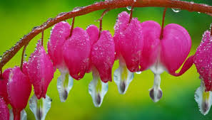
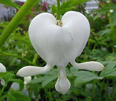
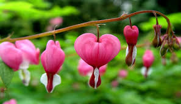
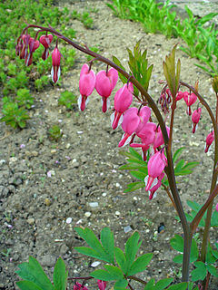

Lamprocapnos mas conocida como corazon sangrante es un género de monotípico de plantas perteneciente a la subfamilia Fumarioideae antigua familia Fumariaceae. Su única especie: Lamprocapnos spectabilis es originaria del Este de Asia.
Es una planta rizomatosa perenne, nativa del este de Asia desde Siberia al sur de Japón. Es una popular planta ornamental para jardines de flores en los climas templados, y también se utiliza en la floristería como flor de corte para el Día de San Valentín. Suele tener flores con forma de corazón rojo con puntas blancas que se inclinan en tallos arqueados a finales de primavera y principios de verano. Flores de color blanco también se cultiva.
Tiene hojas compuestas con folíolos de tres en tres en tallos de hasta 0,9 m de altura. Las flores tienen forma de corazón 3-5 cm de largo, de color rosa con pétalos exteriores e interiores blancos, colgando en un racimo horizontal. Florecen desde finales de primavera hasta principios de verano. Semillas con blanquecinas eleosomas nacen en largas vainas.